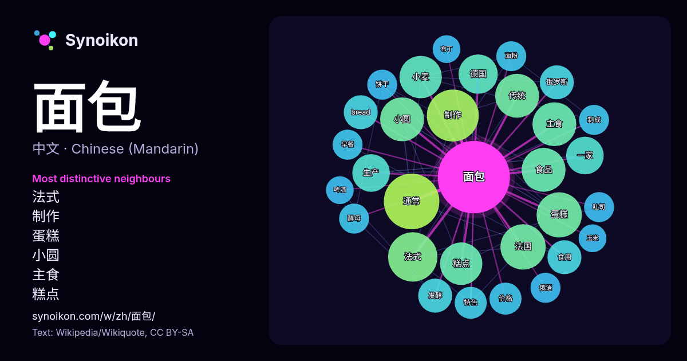

中文 · 每日一词列表
面包
“bread” · 来自维基百科, Wikiquote 637 次出现中其周围的词。

最具特色的邻近词
- 法式 20×
- 制作 17×
- 蛋糕 17×
- 小圆 16×
- 主食 16×
- 糕点 15×
- 小麦 15×
- 食品 14×
- 通常 14×
- 传统 13×
- 法国 12×
- bread 9.9×
- 一家 9.9×
- 发酵 9.9×
- 德国 9.7×
- 食用 8.9×
- 生产 8.9×
- 俄罗斯 8.5×
- 价格 8.2×
- 饼干 8.0×
× = 比维基百科普通文本中多出的倍数。
最常见的邻近词
- 通常 24
- 制作 21
- 法式 19
- 法国 16
- 蛋糕 16
- 主食 15
- 传统 15
- 小圆 15
- 食品 15
- 小麦 14
- 糕点 14
- 德国 12
- 一家 11
- 使用 11
- 包括 11
- 生产 11
- bread 9
- 俄罗斯 9
- 发酵 9
- 没有 9
上下文
- 麵包有時候也含有其他成分，例如牛奶、雞蛋、糖、香料、水果、果仁等等。麵包是最古老的加工食品之一，在新石器時代已經出現。 通常提到面包，大都会想到欧美面包的夹馅面包、甜面包等。其实，按照上述的定义划分，面包这一食品范围更加广泛，世界上还有许多特殊种类的面包。 世界上广泛使用的制作面包 Wikipedia snippets · 麵包
- 《面包与自由》（法語：La Conquête du Pain；俄語：Хлeбъ и воля，羅馬化：Khleb i volja，现拼为Хлеб и воля，或译《面包略取》），是一部由俄罗斯無政府共產主義哲学家彼得·阿列克谢耶维奇·克鲁泡特金写于1892年的书籍。该书最早以一系列法语文章的形式刊登于《革命（英语：Le Wikipedia snippets · 面包与自由
- 典型的牛角麵包 一盤牛角麵包 一個牛角麵包早餐 牛角麵包三明治 牛角麵包甜點 雞肉餡牛角麵包 輕盈的牛角麵包三明治 下午茶時間的牛角麵包 一份麵包拼盤，其中兩個是牛角麵包 烤好的牛角麵包 咖啡廳的牛角麵包 中式的無酥皮牛角麵包 法式长棍面包 Collins English Dictionary Wikipedia snippets · 牛角面包
- 黑麦面包又被常稱為裸麥麵包或者黑麵包，是一種主要由黑麥製成的麵包。黑麦面包在北欧国家和东欧很常见。根據成份不同，其顏色也深淺不一，但比小麦面包颜色更深，纤维和铁含量也更丰富。 黑麦面包有几种不同的类型：纯黑麦面包、同时含有黑麦和小麦的面包，以及硬质黑麦面包。同时含有黑麦和小麦的面包通常比纯黑麦面包 Wikipedia snippets · 黑麦面包
- 法式長棍麵包（法語：baguette，法語：[baɡɛt] ，英語化發音/bæˈɡɛt/）又稱法國長棍麵包、法式硬麵包、法式麵包、長棍麵包，在中國大陸常簡稱法棍，是一种传统的法国长条形面包，以外皮酥脆、内部松软的结构为特色，是法国面包文化的代表食品之一，常作为主食或搭配奶酪、果酱等食用。 Wikipedia snippets · 法式长棍面包
- 酸种面包(Sourdough)，是指用天然來源的酵母和乳酸菌（或老麵）发酵制成的麵包。发酵時會放在冷藏環境以延長發酵時間，繼而发酵出更細膩的風味和產生出其獨特的乳酸（有時也含有醋酸），因而帶有一股酸味。 酸面包通常以黑麦面粉或小麦面粉为主要原料。黑麦在欧洲较多，当地許多人民以酸面包为主要食品。 Wikipedia snippets · 酸面包
- 面包炉，各个家庭到这个面包炉定期烤一批面包，平时只在家中吃储存的面包，因此面包制作的非常大，吃时切下一片。由于历史悠久，发展出制作大面包的传统技术。大面包比小的香味浓郁，口味微酸，较硬，适宜储存，另有一番风味。 面包 黑麦面包 新疆美食文化丨安之若素 新疆特色“大列巴”上市啦！ Wikipedia snippets · 大列巴
- 越南法國麵包（越南語：Bánh mì Việt Nam／餅麵越南）或稱越南式三明治、越南面包、越南麵餅，是一種具東南亞色彩的三明治，因使用法國麵包製作得名，可視為一種潛艇堡。雖在國際上常被當成越南特色菜，但此食品廣泛流行於中南半島地區。製作該麵包時，除了用麵粉外，亦會加入米粉，質感相對較脆，也較傳統法包為輕。 Wikipedia snippets · 越南法國麵包
更多词
于 2026-10-09 以默认设置预先计算（±5 个词，中等语料）。交互式图可用实时数据刷新。
界面为机器翻译，欢迎指正。